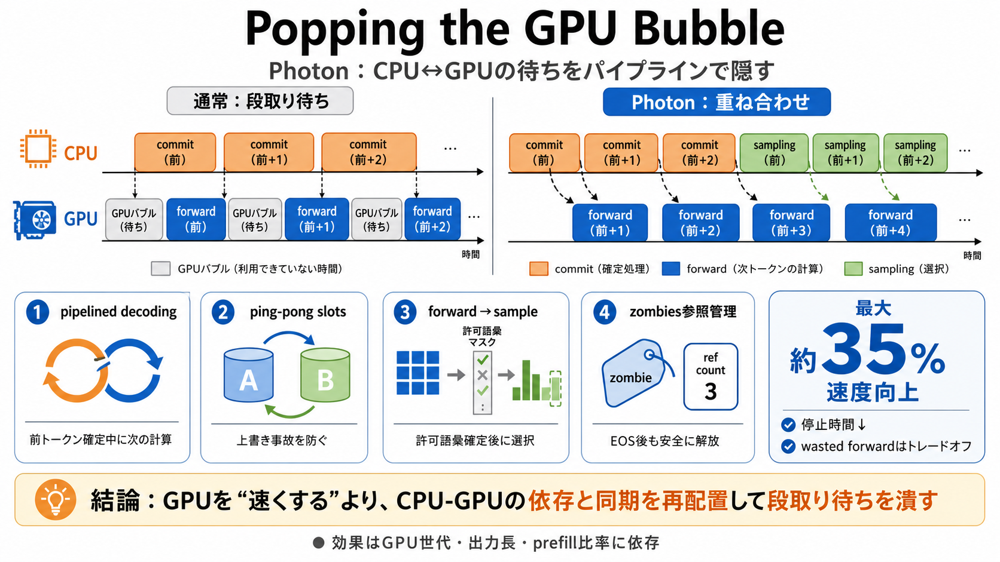

cover
02 / 12
GPU待ちの原因
Popping
the GPU Bubble
Moondream Photonは、VLM推論の自己回帰デコードに潜むCPU↔GPUの待ち時間を“ほぼリアルタイム”へ近づけるための設計です。
problem
03 / 12
待ちは“計算”ではない
CPU段取り待ち
自己回帰（autoregressive）ではトークンを1個ずつ確定するため、CPUが次の指示を用意・commitするまでGPUが止まりやすく、これがGPU bubble（GPUバブル）です。
CPU側
次トークンの計画・メタデータ準備・commit（確定処理）
GPU側
forward（計算）→ sampling（選択）
metaphor
04 / 12
工場の段取り
事務×計算
CPUの“事務作業”が次の計算開始を遅らせ、GPUがアイドルになります。Photonは、事務と計算を重ねて待ちを隠します。
通常
CPU commit → GPU forward
狙い
CPU commit と GPU forward を重ねる
結果
GPU が停止しない時間が増える
architecture
05 / 12
鍵は重ね合わせ
pipelined decoding
Photonは pipelined decoding（パイプライン化されたデコード）で、前トークンのcommit中に次トークンのforwardを走らせます。
同時進行
commit（前） × forward（次）
目的
GPUバブルを“隠して”スループットを上げる
process
06 / 12
上書き事故を防ぐ
ping-pong slots
オーバーラップには安全性が前提です。Photonは2組のDecodeSlot（作業バッファ）をピンポンで交互使用し、コピー途中の上書きを防ぎます。
要点
CUDA前後の結果を同じ領域で使い回さない
効果
オーバーラップを“破綻せず”成立させる
distinction
07 / 12
順序を入れ替える
forward→sample
制約付き復号（constrained decoding）では、許可語彙（マスク）がcommit結果に依存します。Photonは forward を先に、sampling を後にずらす（commit-before-finalize）ことで前進を保ちます。
forward
モデル計算（マスク確定前でも実行可能）
sampling
許可語彙の確定後に選択（サンプリング時に必要なマスク）
enumeration
08 / 12
キャンセルの地雷回避
zombies 参照
EOS（終了）に到達しても、GPU計算が“次ステップに混ざっている”ことがあります。Photonは finalized と inflight_refs で参照を管理し、解放が正しくなるまで保持します。
finalized
このシーケンスは終了扱い（確定状態）
inflight_refs
GPU上でまだ参照され得る分の参照数
architecture
09 / 12
重い開始も載せる
prefill 同乗
prefill（新規リクエストのプロンプト処理：重い一括計算）も同じパイプラインに載せます。短い出力が多いワークロードでCPU-GPUの重なりが活きます。
prefill
重い一括計算（処理の初期段）
効きやすい条件
短文・短い出力が多い（リクエスト混在）
evidence
10 / 12
バブル消失に近い
最大 約35%
GPUは“ほぼforward+samplingの全時間”を使う状態に近づき、速度向上は数％〜最大約35%の観測が示されています（ただし wasted forward：ゾンビ課税あり）。
良いこと
GPUが停止しない時間割合が増える
トレードオフ
先行実行の wasted forward（バッチサイズで償却）
closing
11 / 12
再利用できる設計
結論
Photonの本質は“GPUを速くする”より、同期設計と依存関係の再配置でCPU-GPU待ちを減らすことです。ping-pong slots / forward先行 / zombies参照が、その正しさと実効速度を両立します。
一言
段取り待ちを設計で潰す
手段
pipelined decoding + バッファ安全性
注意
条件依存（GPU世代・出力長L・prefill比率）
REFERENCES
12 / 12
References
No references found